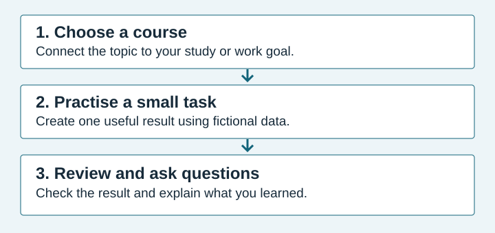

Build digital skills for study and work
Start with a practical task: organise a spreadsheet, understand a report, or build your first web page. PNG Digital Skills Hub is a proposed learning service for adult beginners in Papua New Guinea.
Student website concept: the courses and enquiry form are demonstrations. Enrolment is not currently available.
Who is this for?
- Students who want to organise assignments and build simple websites.
- Office staff who want to work more confidently with spreadsheets and reports.
- Small business owners who want to understand their records and share information online.
No previous coding experience is needed for the introductory course concepts. You should be comfortable opening files and using a web browser.
A practical learning path

- Choose: compare the course topics and find one that supports your goal.
- Practise: create a small example using fictional data.
- Review: check the result and identify a question to ask.
Find your starting point
If you work with rows and columns, start with Spreadsheet Foundations. If you need to explain a business result, explore Reporting Basics. To publish information online, try Web Page Foundations.
Unsure which topic suits you? Try the course enquiry form.